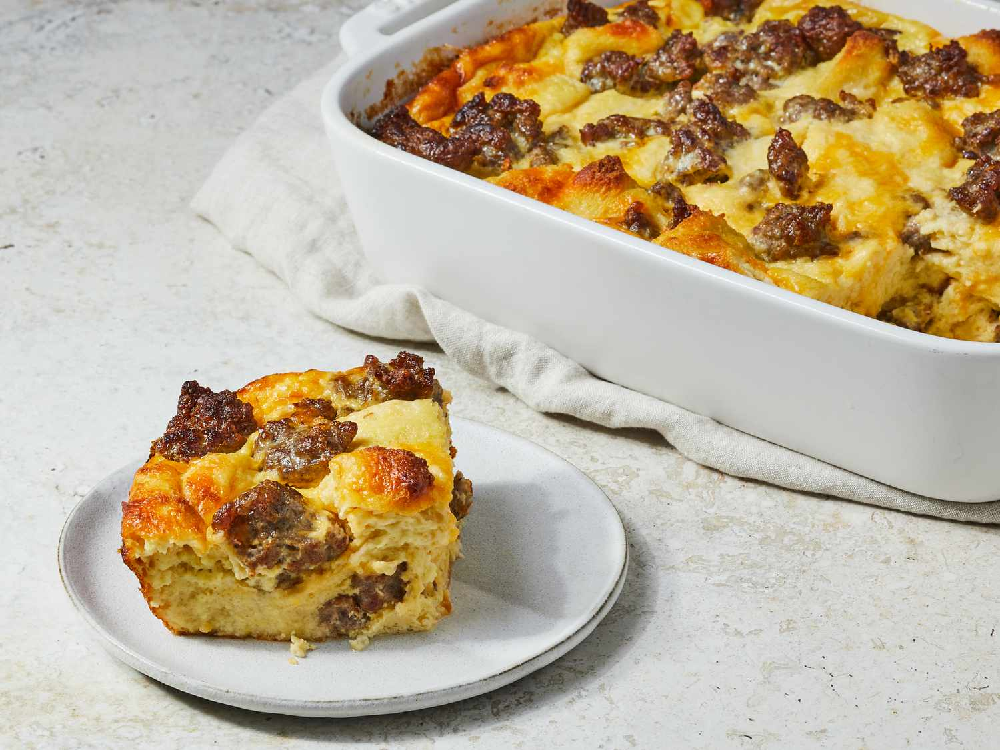

Christmas Eggs

Description
A light and fluffy breakfast caserole complete with sizzling sausage, perfect for a hearty breakfast.
Ingredients
- 2 1/4 cups grated cheese
- 9 slices of bread, cubed
- 1 1/2 lbs sausage or ground beef
- 6 eggs
- 3/8 tsp dry mustard
- 3 cups milk
- 1 1/2 tsp salt
Steps
- Butter a 9x13 pan
- Layer bread, sausage and cheese
- In a medium bowl, beat eggs with dry mustard.
- Add milk and salt.
- Pour mixture over bread.
- Put in refrigerator over night.
- Bake at 325 degrees for 1 hour.